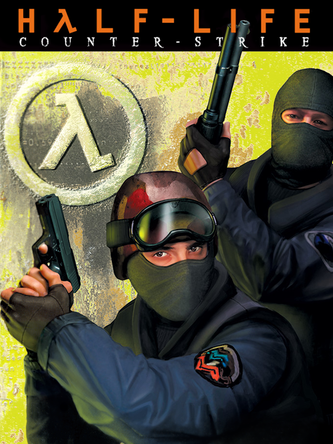

 |
|
| Tiempo de juego | 1m 58s |
| Última actividad | 4/12/2025 13:34:13 |
| Añadido | 26/4/2025 1:40:24 |
| Modificado | 10/12/2025 11:25:31 |
| Estado de finalización | Jugado |
| Librería | Playnite |
| Fuente | |
| Plataforma | PC (Windows) |
| Fecha de lanzamiento | 9/11/2000 |
| Puntuación de la Comunidad | 83 |
| Puntuación de la Crítica | 70 |
| Puntuación de usuario | |
| Género | Shooter |
| Desarrollador | Valve |
| Editor | Sierra Entertainment Valve |
| Característica | Multiplayer |
| Enlaces | Steam Twitch + Game Banana + CS-BG + Game Maps + ModDB |
| Tag | |
Esto no es terrors vs conters.
Esto es la máquina 3 del ciber, la silla medio rota, el teclado pegajoso y la luz de la pantalla reflejada en tus ojos. Es el sonido ambiente de diez pibes rusheando B a puro grito, el admin mirando de reojo, y ese lagazo justo cuando ibas a meter el headshot del siglo con la Deagle. Es la adrenalina de desactivar en el último segundo, la bronca de que te maten "de un tiro loco, ¡seguro tiene cheat!" o la satisfacción de la ronda eco bien jugada que te permite comprar la AK legendaria.
Esas horas quemadas en Dust2, Assault o cs_italy, la camaradería (o la puteada) con los que tenías al lado en la LAN. CS 1.6 no fue solo un juego, fue la banda sonora y la épica época en los cibers argentinos. Si te pones esto en la biblioteca, sabés que no estás agregando un jueguito más, ¡estás guardando un pedazo de historia gamer, cargado de nostalgia y anécdotas que solo entendemos los que estuvimos ahí!
Mandale y que vuelvan esos flashes de cuando la vida pasaba entre rondas, una bebida estimulante y el ruido de las teclas viejas.
¡Qué recuerdos papá!